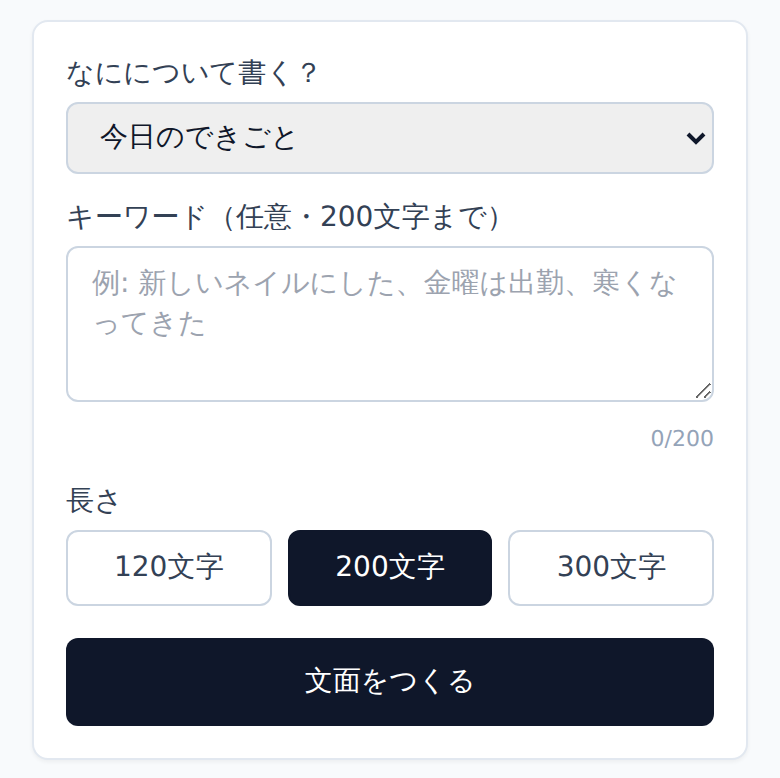
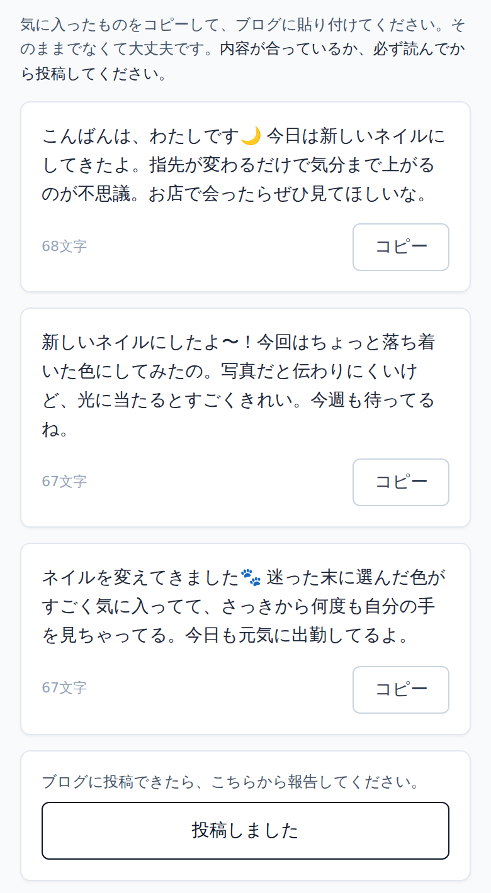
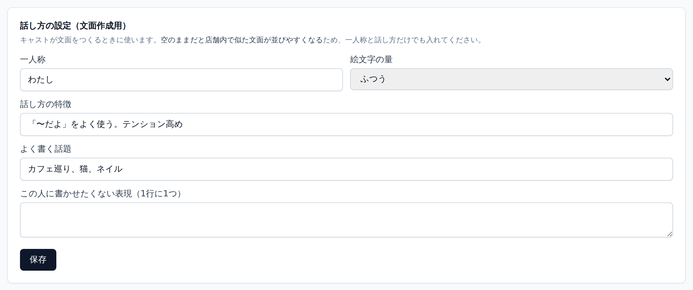
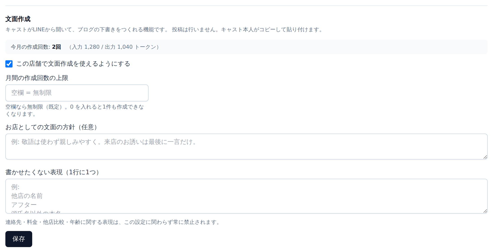

キャストのブログ更新状況を一元管理し、未更新の方へ自動でLINEリマインドを送るWebシステムです。 あわせて、更新が止まる原因である「何を書けばいいか分からない」を解消する文面作成機能を備えています。
| 2ページ | キャストの使い方（実際の画面） |
| 3ページ | 管理者の使い方（実際の画面） |
| 4ページ | ランニングコスト（キャスト100名・複数店舗の前提） |
| 5ページ | 導入に必要なもの・動作仕様の数値・注意事項 |
キャストはアカウント登録もパスワードも不要です。LINEのメニューをタップするだけで使えます。

入力はテーマ・キーワード・長さの3つだけで、キーワードは省略できます。 営業前後の短い時間に片手で終わる操作量に絞っています。

案ごとにコピーボタンがあり、長押しでの範囲選択は不要です。 この下に残り2案が続き、最後に「投稿しました」があります（画面は上部のみ）。
| 方法 | 操作する人 | 記録の扱い |
|---|---|---|
| 文面作成画面の「投稿しました」 | キャスト本人 | 本人の申告 |
| LINEメニューの「投稿したよ」 | キャスト本人 | 本人の申告（今日／昨日を選択） |
| 管理画面からの手入力 | スタッフ・店長 | スタッフ入力（60営業日前まで遡及可） |
いずれも自己申告です。文面を生成しただけでは実績になりません（実績の水増しを防ぐため）。
日々の操作は不要です。管理者が触るのは導入時の設定と週1回の状況確認が中心になります。
在籍者数・要リマインド人数・今週の目標達成状況を上部に集約。 下段で各キャストの今週の更新回数、最終更新日、LINE連携の有無を一覧で確認できます。 ここを週1回見るだけで、更新が止まっている人が分かります。

キャスト詳細画面にあります。1人あたり1〜2分。 ここを空のまま運用しないでください。 全員が同じ設定だと似た文面が生成されます。導入時に本人へ聞き取って埋めてください。

設定画面にあります。今月の作成回数と使用トークン数がここに表示されるため、 費用の状況をこの1画面で把握できます。上限は既定で無制限です（空欄＝無制限、0＝作成不可）。
キャストが報告を忘れた場合に、スタッフが代わりに記録できます（60営業日前まで遡及可）。 記録は物理削除せず「無効化」として履歴を残すため、実績の改ざんができません。 画面右上からCSVを書き出せます。
| 権限 | できること | できないこと |
|---|---|---|
| 管理者 | 全店舗の管理、スタッフの追加・停止、文面作成の設定 | — |
| 店長 | 自店舗のキャスト・目標・記録・文面設定の管理 | 他店舗の閲覧、管理者の停止 |
| スタッフ | 更新記録の入力と閲覧 | 記録の無効化、LINE連携コードの発行、同僚の情報の閲覧 |
退職者は「無効化」した時点で全端末が即ログアウトされます（パスワード変更を待つ必要はありません）。
キャスト100名・複数店舗を前提に算出しています。この規模では 月額はほぼ一定（約1.1万円 ＝ 1人あたり約116円）になり、更新状況では大きく変わりません。
| 項目 | 課金の形 | 月額 | 備考 |
|---|---|---|---|
| サーバー（Vercel） | 固定 | 約 3,100円 | 商用提供にはProプランが必要（無料のHobbyは非商用限定） |
| データベース（Neon） | 固定 | 約 2,900円 | 100名・複数店舗の商用運用では有料プランを推奨（無料枠でも開始は可能） |
| LINE通知 | 固定 | 5,000円 | 100名では無料枠200通を必ず超えるため、ライトプラン（5,000通）が必須 |
| 文面作成 | 従量 | 約 630円 | 1回0.5円 × 100名が週3回使った場合（月1,304回） |
| 合計 | — | 約 11,600円 | 1人あたり月116円。店舗数が増えても金額は変わりません |
| キャストの更新パターン | 1人あたり | 100名合計 | 必要なプラン |
|---|---|---|---|
| 週3回・曜日を分散（月水金） | 4.3通 | 430通 | ライト |
| 週3回・週末に集中（金土日） | 13.1通 | 1,310通 | ライト |
| 週2回（金土） | 17.3通 | 1,730通 | ライト |
| 週1回（土のみ） | 21.7通 | 2,170通 | ライト |
| まったく更新しない（最大値） | 30.3通 | 3,030通 | ライト |
| 在籍キャスト | 週1回使う | 週3回使う（標準） | 毎日使う |
|---|---|---|---|
| 50名 | 217回 / 約104円 | 652回 / 約313円 | 1,521回 / 約730円 |
| 100名（今回の想定） | 435回 / 約209円 | 1,304回 / 約626円 | 3,042回 / 約1,460円 |
| 150名 | 652回 / 約313円 | 1,955回 / 約939円 | 4,563回 / 約2,190円 |
「回数」は月間の生成回数（1回＝3案）。作り直しをした場合はその分だけ回数が増えます。 仮に100名全員が毎日使い、毎回2回作り直しても月約4,400円です。 より高品質なモデルに変更した場合は約3倍（100名・週3回で月約1,880円）になります。 月間の作成回数の上限は店舗ごとに設定できます。
| パターン | サーバー | DB | LINE | 文面作成 | 月額合計 |
|---|---|---|---|---|---|
| 全員が週3回使う（標準） | 3,100円 | 2,900円 | 5,000円 | 626円 | 約 11,600円 |
| 全員が毎日使う（最も多い） | 3,100円 | 2,900円 | 5,000円 | 1,460円 | 約 12,500円 |
| 文面作成を使わない | 3,100円 | 2,900円 | 5,000円 | 0円 | 約 11,000円 |
| （参考）DBを無料枠のまま運用 | 3,100円 | 0円 | 5,000円 | 626円 | 約 8,700円 |
更新が定着していても滞っていても、月額はほぼ変わりません。 30名規模ではLINEの通数が費用を左右しましたが、100名では最初から定額プランに入るため、 変動するのは文面作成の数百円だけです。
| 条件 | 追加費用 |
|---|---|
| 店舗ごとにLINE公式アカウントを分ける場合 | 1店舗あたり +5,000円/月 |
| 在籍が165名を超えた場合（LINEのプラン変更） | +10,000円/月 |
| 在籍が150名を超えた場合（文面作成の増加分） | +約300円/月 |
| 店舗数が増えた場合（サーバー・DB） | 0円 |
| 項目 | 内容 | 所要 |
|---|---|---|
| LINE公式アカウント | Messaging API チャネル。100名ではライトプラン（月5,000円）が必須（全店舗で1つを共用） | 20分 |
| サーバー・DB | Vercel（Proプラン）と Neon（有料プラン推奨）のアカウント | 25分 |
| 文面作成のAPIキー | Anthropic Console で発行（使わない場合は不要） | 5分 |
| 管理者・店長アカウント | メールアドレス（管理者は2名以上を推奨）＋ 店舗ごとの店長 | 15分 |
| 店舗の登録 | 店舗ごとに営業日の区切り・リマインド時刻を設定 | 1店舗5分 |
| キャストの初期設定 | LINE連携コードの配布と「話し方の設定」の入力 | 1人2分 |
| 合計（4店舗・キャスト100名の場合） | 手順書に沿って作業した場合 | 約5時間 |
| リマインド | |
|---|---|
| 送信時刻 | 既定17時（0〜23時で設定可） |
| 未更新判定 | 直近2営業日（1〜30日で設定可） |
| 送信頻度 | 1人1営業日につき1通まで |
| 再送 | 失敗時は最大3回 |
| 月間上限 | 初期値180通（100名では4,800通へ変更） |
| 営業日 | 朝6時区切り（0〜23時で設定可） |
| 文面作成 | |
|---|---|
| 生成数 | 1回につき3案 |
| 長さ | 120／200／300文字から選択 |
| キーワード | 200文字まで |
| 月間上限 | 既定なし（設定で指定可） |
| 連続実行 | 1人60秒に3回まで |
| リンク有効期限 | 60分 |
| 記録・アカウント | |
|---|---|
| 遡及入力 | 60営業日前まで |
| 1日の記録 | 1人10件まで |
| 週の目標 | 0〜50回（既定3回） |
| パスワード | 12文字以上 |
| ログイン | 15分に5回失敗で一時停止 |
| 自動ログアウト | 未操作7日／発行30日 |
| 頻度 | 作業内容 | 担当 |
|---|---|---|
| 日次 | データベースのバックアップ（自動） | システム |
| 週次 | ダッシュボードの確認、脆弱性の有無の確認 | 店舗 / 提供者 |
| 月次 | LINE送信数・文面作成回数の確認、各種更新の適用 | 提供者 |
| 年次 | バックアップからの復元リハーサル、管理者アカウントの棚卸し | 提供者 |